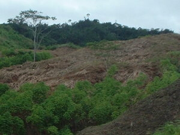
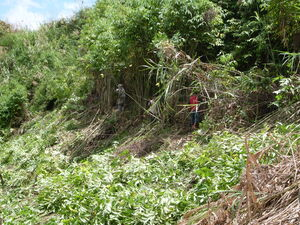

kamet  
/kamɔt/
n.
“field”
1.
n.
a field (cleared by burning part of the forest)
Wrd.Gloss: field
Cult. Slash and burn agriculture for upland rice and corn planting.
Syn. kaingin
Eng. field; clearing; farm; swidden
Tag. kaíngin; sakáhan
Ceb. kaingin; uma
Ilo.: agumá
OCM: Tillage (241)
DDP: Forest, grassland, desert (1.2.1.6)
Online dict status: -
Usage level: B
v.
for someone (egkamet, migkamet/ingkamet, kamet, agent, eg><ø-) to clear brush and weeds (egkameten, ingkamet/migkamet/pigkamet, kameta, patient, eg><en-) from an area (egkametan, ingkametan/migkametan/pigkametan, kameti, location, eg><an-) with a bolo (ugpit) (igkamet, ingkamet, instrument, ig><ø-) in order to make a field
Iyan kaluwasan te seini ne lalag ka egpanamped/egpanibas te me hilamunen wey dereisek dè ne me kayu eyew egkalinisan wey egmaawang ka igkeupii ne eggawanan. Egkeimpusan te eggawan, egpepeleran e (derakel ne me kayu). Iyan katuyuan te seini ne lalag ka eggawan te baad te tanè eyew egpamulaan te minsan nekey.
Egkamet key su egpanuig e.
We'rè going to clear an area for a field for the right time has come.
Cult. Stages of kamet: panleuy, egsuli, egpammineg e te limuken, egpalusung/egpangakat
O. Syn. kalamet
Eng. clear field
Ceb. maglampas
OCM: Tillage (241)
Online dict status: -
Usage level: F
2.
n.
(pangamet, paN-) clearing season
Eng. clearing season
Online dict status: -
Usage level: M
Updated by: RJH,AAA,TME,NJK,QDL,NJK,RAA,QDL
Last updated: 16/Oct/2013
"kamet" in reader "Pendei ka?"
"kamet" in reader "Hendei si Lita?"
"kamet" in healthbook "Anak ni Biltu ne migkerid"
"egpangameten" in healthbook "Migderalu si Junjun te malariya"
"migkamet" in healthbook "Migderalu si Junjun te malariya"
"egkameten" in healthbook "Migderalu si Junjun te malariya"
"nangekamet" in healthbook "Natibbas te ugpit ka paa ni Biltu"
This page last updated: 28-Dec-2019
Copyright © 2009-2014, Matigsalug Language Christian Association, Inc